Vampire Survivors/파워 크립
Vampire Survivors/파워 크립
최근 수정 시각:

Vampire Survivors의 캐릭터 능력치를 영구히, 혹은 한 게임에서 무한히 성장시켜 파워 인플레와 밸붕을 유도하는 시스템에 대해 다루는 문서다.
Power Creep은 파워 인플레의 영미권 명칭이다.
1.15 버전 기준으로 황금알과 서바로트 2가지의 파워 크립이 존재하며, 캐릭터 셋업 박스에서 둘 중 하나를 활성화시킬 수 있다. 둘 다 비활성화시켜서 인플레를 억제하는 것도 가능하다.
각 파워 크립의 특징은 다음과 같다.
Power Creep은 파워 인플레의 영미권 명칭이다.
1.15 버전 기준으로 황금알과 서바로트 2가지의 파워 크립이 존재하며, 캐릭터 셋업 박스에서 둘 중 하나를 활성화시킬 수 있다. 둘 다 비활성화시켜서 인플레를 억제하는 것도 가능하다.
각 파워 크립의 특징은 다음과 같다.
- 황금알은 모든 표기 능력치가 골고루 상승하며 한 번 입수하면 이후의 모든 게임에서 아무 조건 없이 적용된다. 대신 개당 성장폭은 미미하고 캐릭터별로 따로 적용되는 단점이 있다.
- 서바로트는 전반적으로 능력치 상승폭이 크고 단순 표기 능력치 상승 이상의 효과를 볼 수 있다. 대신 효과를 보기 위해서는 게임 내에서 확률적으로 떨어지는 걸 입수해야 하고, 대부분의 카드가 레벨업 등의 조건을 가지고 있다. 때문에 발동이 느리고 신경을 써야 할 부분이 많다. 또한 황금알과 달리 한 게임에서만 적용된다.
 Golden Egg. 히든 스테이지 Holy Forbidden에서 노란색 신호 유물을 입수하면 해금된다.
Golden Egg. 히든 스테이지 Holy Forbidden에서 노란색 신호 유물을 입수하면 해금된다.황금알을 습득하면 캐릭터의 능력치 중 하나를 무작위로 소폭 증가시킨다. 이 증가치는 캐릭터별로 영구히 누적된다. 모든 능력치를 증가시키기에 전투 능력치 뿐만 아니라 저주, 성장, 탐욕 및 쿨감, 이속, 투사체수, 부활수 등도 증가한다. 하지만 무한대로 먹일 수 있기 때문에 너무 많이 먹이면 캐릭터를 컨트롤하기 어려워지고, 캐릭터가 너무 강해져 파워 밸런스가 무너진다는 단점도 있기 때문에 적당량만 먹이는 것이 좋다.
서바로트 추가 후로는 골드 파밍 캐릭터 하나에만 황금알을 몰빵하고, 그 캐릭터로 서바로트 부스트에 들어갈 골드를 파밍하는 게 효과적이다.
- 암상인에게 개당 1만골드에 구입
- 은반지&금반지,
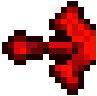
좌&우 메탈리오를 지키고 있는 
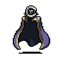
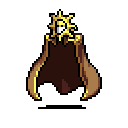
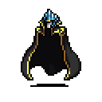
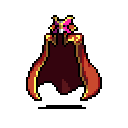
아틀란티안과, 달빛 스테이지에서 14분에 등장하는 작은 아틀란티안을 잡으면 개체당 1개씩 얻을 수 있다. - 붉은 사신 리퍼를 잡으면 5개를 얻을 수 있다.
- Tides of the Foscari DLC가 있는 경우, 포스카리 심연 스테이지의
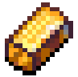
토로나의 상자가 숨겨진 공간에 진입하면작은 아틀란티안이 지속적으로 스폰되며, 잡으면 개체당 1개씩 얻을 수 있다. 적당히 채굴해도 한 판에 1000개 이상 획득 가능하다.
 최대 체력 : 황금알 1개당 1 상승회복 : 황금알 1개당 0.1 상승
최대 체력 : 황금알 1개당 1 상승회복 : 황금알 1개당 0.1 상승
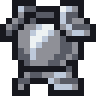
방어력 : 황금알 1개당 0.1 상승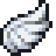
이동속도 : 황금알 1개당 1% 상승피해량 : 황금알 1개당 1% 상승
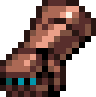
투사체 속도 : 황금알 1개당 1% 상승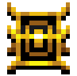
지속시간 : 황금알 1개당 1% 상승공격범위 : 황금알 1개당 1% 상승쿨타임 : 황금알 1개당 0.5% 감소투사체 수 : 황금알 1개당 0.1 상승부활 : 황금알 1개당 0.1 상승자석 : 황금알 1개당 0.3% 상승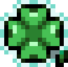
행운 : 황금알 1개당 1% 상승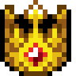
성장 : 황금알 1개당 1% 상승탐욕 : 황금알 1개당 1% 상승 저주 : 황금알 1개당 1% 상승
저주 : 황금알 1개당 1% 상승 새로고침 : 황금알 1개당 0.1 상승
새로고침 : 황금알 1개당 0.1 상승 건너뛰기 : 황금알 1개당 0.2 상승
건너뛰기 : 황금알 1개당 0.2 상승 지우기 : 황금알 1개당 0.2 상승
지우기 : 황금알 1개당 0.2 상승황금알로 증가하는 최대 능력치 수치는 피해량 900%, 투사체 속도 400%, 지속 시간 400%, 공격 범위 900%, 쿨타임 90%, 투사체 수 +10이며 나머지는 무한대로 증가한다. 더불어 갑옷의 보복 보너스의 최대 피해량을 요구하는 방어력 최대치는 50이다.
게임에선 최대 능력치 수치를 넘길 수 있는 것처럼 보이게 되어 있으나 실제 게임 내부 코드상에선 효과가 해당 수치 이상을 못 넘게 되어 있다.
황금알을 5000개 이상 먹인 캐릭터로 달빛 스테이지에서 6시 방향으로 내려가면 검은 형상을 만날 수 있고, 해당 NPC를 통해 황금알을 삭제할 수 있다. 또한 캐릭터 선택 시 황금알 적용을 해제한 후에도 이 기능은 사용 가능하다.

▲ 삭제 NPC, Healer

▲ 삭제 화면
- 포스카리의 등불은 황금알을 25,000개 이상 먹인 캐릭터에게만 해금되는 기능으로, 황금알의 이동속도 보너스만을 초기화한다.
- 황금알을 전부 초기화시킬 경우 배경색이 푸른색으로 변경되며, NPC 등장 조건 및 어쩌다 이렇게 된 거야?의 의미를 감안하면 원래의 깔끔한 상태로 돌아왔기 때문에 배경이 바뀌는 것으로 추정된다.
- 아래의 서바로트를 활성화해도 황금알은 정상적으로 드롭되며, 입수도 되고 먹인 수도 누적된다. 단지 효과만 적용되지 않는다.
- 여왕 시그마는 전 캐릭터 중 유일하게 황금알을 사용할 수 없다. 상인의 구매 목록에는 아예 뜨지 않고, 아틀란티스인 등을 처치해서 드롭된 황금알을 입수하려 하면 그냥 날아가 사라진다.
- 세크레티노는 황금알의 보유량에 따라 특수 능력이 강화되는 특이한 기믹이 있다.

기본적으로는 서바로트를 획득 가능한 캐릭터로 조건을 만족하면 얻을 수 있다. 1.15.104 버전 기준으로 라이케움 스테이지의 상인에게서 유물을 구입해 해금할 수 있다. 그 이전 버전이라면 세크레티노와 Ante Chamber DLC의 캐릭터 4종으로만 사용할 수 있다.
황금알을 선택하면 서바로트는 비활성화되나, 예외로 상술한 세크레티노와 Ante Chamber DLC의 캐릭터 4종은 언제나 서바로트를 찾을 수 있다는 설명대로 황금알 모드에서도 서바로트를 쓸 수 있다. 또한 안테 챔버 스테이지에는 5개가 필드에 배치되어 있어서 선택에 무관하게 사용이 가능하다.
서바로트는 광원에서 낮은 확률로 나오며, 드롭된 수에 반비례해 드롭 확률이 감소한다. 안테 챔버, 박쥐 드래곤 등 광원 외의 수단으로 얻은 서바로트는 드롭 확률에 영향을 끼치지 않는다.
황금알을 선택하면 서바로트는 비활성화되나, 예외로 상술한 세크레티노와 Ante Chamber DLC의 캐릭터 4종은 언제나 서바로트를 찾을 수 있다는 설명대로 황금알 모드에서도 서바로트를 쓸 수 있다. 또한 안테 챔버 스테이지에는 5개가 필드에 배치되어 있어서 선택에 무관하게 사용이 가능하다.
서바로트는 광원에서 낮은 확률로 나오며, 드롭된 수에 반비례해 드롭 확률이 감소한다. 안테 챔버, 박쥐 드래곤 등 광원 외의 수단으로 얻은 서바로트는 드롭 확률에 영향을 끼치지 않는다.
기본적으로 무작위로 선택된 4~5장의 카드가 제시되며 그 중 하나를 선택한다. 선택 이외에도 새로고침과 부스트를 쓸 수 있다.
- 새로고침: 캐릭터의 새로고침 기회를 1 소모해서[1] 카드를 새로 뽑는다. 기본적으로는 4장의 카드가 제시되며 낮은 확률로 5, 6장의 카드가 제시되기도 한다.
- 부스트: 골드를 소비해 에디션 카드를 뽑는다. 7개의 카드가 제시되며, 100 확률로 에디션이 붙는다. 부스트 비용은 99,999골드로 시작하며, 추가로 부스트할 때마다 1만 골드씩 감소한다. 최소 비용인 49,999 아래로는 내려가지 않는다.
각 서바로트 카드는 별개의 레벨을 가지며, 입수한 시점부터 캐릭터의 레벨이 하나 증가할 때마다 따라서 증가한다. 일부 캐릭터는 서바로트 레벨 멀티플라이어라는 능력치를 따로 올릴 수 있는데, 이 능력치만큼 한 번에 오르는 레벨의 수가 증가한다. 예시로 멀티플라이어가 4인 짐보는 캐릭터 레벨 1이 상승할 때마다 서바로트 레벨은 4씩 상승한다.
또한 서바로트를 입수하면 위험(Risk) 페널티가 생성되어 적의 체력과 피해량이 증가하며, 더 많이 입수할수록 페널티도 강해진다. INVE 에디션 카드를 입수하면 페널티가 약화되지만, 기본 수치인 체력 +20%와 피해량 +10% 미만으로 내릴 수는 없다.
또한 서바로트를 입수하면 위험(Risk) 페널티가 생성되어 적의 체력과 피해량이 증가하며, 더 많이 입수할수록 페널티도 강해진다. INVE 에디션 카드를 입수하면 페널티가 약화되지만, 기본 수치인 체력 +20%와 피해량 +10% 미만으로 내릴 수는 없다.
서바로트 카드는 무작위한 확률로 에디션이 추가되어 나올 수 있다.
 FOIL: 무작위한 보너스 옵션을 추가한다. 가능한 보너스 옵션은 아래 문단에 기재되어 있다. 카드에 무지갯빛의 집중선 필터가 씌워진다.
FOIL: 무작위한 보너스 옵션을 추가한다. 가능한 보너스 옵션은 아래 문단에 기재되어 있다. 카드에 무지갯빛의 집중선 필터가 씌워진다.- GALA: 카드에 지정된 보너스 옵션을 추가한다. 보너스 옵션은 각 카드 설명에 기재되어 있다. 카드에 무지갯빛의 별 필터가 씌워진다.
- HOLO: 캐릭터의 레벨이 하나 증가할 때마다 해당 서바로트의 레벨이 4씩 증가한다. 멀티플라이어와는 합연산된다. 예시로 위의 짐보가 이 카드를 집으면 매 레벨업마다 서바로트 레벨이 8씩 오른다. 카드에 녹색 보석 형태의 필터가 씌워진다.
- INVE: 카드의 기본 능력치 증감량이 반전되며, 위험 수치가 감소한다. 보너스는 페널티가 되고 페널티는 보너스가 된다. 카드 색상도 반전된다.
- POLY: 카드의 기본 능력치 증감량이 2배가 된다. 페널티가 있는 카드는 페널티도 2배가 된다. 카드에 무지개 필터가 씌워진다.
서바로트 입수와 동시에 해금되는 기본적인 덱이다. 각 카드는 대체로 그려진 캐릭터의 능력과 비슷한 효과를 가지고 있다.

001 - 안토니오 벨파에제
- 습득 시 효과: 최대 체력 +80
- 성장 효과: 매 5 레벨 상승마다 피해량 +10%(최대 +50%)
- GALA 보너스: 매 레벨 상승마다 최대 체력 +5
GALA 보너스는 반격 빌드에 유용하다. 깡으로 최대 체력에 간섭하는 효과라서 INVE가 붙으면 최대 체력 80 미만의 캐릭터가 집었을 때 무적이 된다. 다른 최대 체력을 낮추는 카드들도 마찬가지.
002 - 이멜다 벨파에제
- 습득 시 효과: 새로고침 +8, 건너뛰기 +8, 지우기 +8
- 성장 효과: 매 5레벨 상승마다 성장 +10%(최대 +50%)
- GALA 보너스: 매 레벨 상승마다 성장 +1%
GALA 보너스는 모든 빌드에 유용하다.
003 - 파스콸리나 벨파에제
- 습득 시 효과: 부활 +1
- 성장 효과: 매 5레벨 상승마다 지속시간과 투사체 속도 각각 +10%(최대 각 +30%)
- GALA 보너스: 특정 처치 수 달성마다 부활 +1(1000, 5000, 이후 10000마리 처치마다 상승)
GALA 보너스는 사실상 부활을 무제한으로 수급해 준다. 부활 시너지가 있는 캐릭터, 혹은 부활 능력치의 영향을 받는 무기를 쓸 때 유용하다.
004 - 젠나로 벨파에제
- 습득 시 효과: 투사체 수 +1
- 성장 효과: 매 5레벨 상승마다 최대 체력 +30(최대 +150)
- GALA 보너스: 치명타 피해 +100%
GALA 보너스는 치명타 빌드에 유용하나, 단리로 적용되므로 드라마틱하게 딜을 상승시켜주지는 않는다.
005 - 아르카 라돈나
- 습득 시 효과: 공격 범위 +20%
- 성장 효과: 매 5레벨 상승마다 쿨타임 -5%(최대 -15%)
- GALA 보너스: 현재 체력이 20% 미만으로 감소하면 은두자 프리타를 발동한다. 체력을 전부 회복하면 다시 사용 가능해진다.
006 - 포르타 라돈나
- 습득 시 효과: 쿨타임 -90%, 레벨 상승에 따라 보너스가 사라진다. (2레벨 -60%, 3레벨 -30%, 4레벨 이후 소멸)
- 성장 효과: 매 5레벨 상승마다 공격 범위 +10%(최대 +50%)
- GALA 보너스: 매력 +50
INVE 에디션 카드는 쿨타임을 잠깐 동안 +90%로 크게 늘린다.
007 - 라마 라돈나
- 습득 시 효과: 방어력 +2, 피해량 +30%
- 성장 효과: 매 5레벨 상승마다 저주 +10%(최대 +50%)
- GALA 보너스: 특정 처치 수 달성마다 방어력 +1(1000, 5000, 이후 10000마리 처치마다 상승)
GALA 보너스는 무한 방어력을 제공하므로 반격 빌드에 유용하다.
008 - 포 랏초
- 습득 시 효과: 자석 +30%
- 성장 효과: 매 5레벨 상승마다 회복 +0.2(최대 +1)
- GALA 보너스: 현재 체력이 20% 미만으로 감소하면 최대 체력을 40 상승시키고 30%의 현재 체력을 회복한다. 체력을 전부 회복하면 다시 사용 가능해진다.
009 - 수오르 클레리씨
- 습득 시 효과: 공격 범위 +400%, 레벨 상승에 따라 보너스가 사라진다. (2레벨 +300%, 3레벨 +200%, 4레벨 +100%, 5레벨 이후 소멸), 회복 +0.4
- 성장 효과: 매 5레벨 상승마다 이동속도 +10%(최대 +50%)
- GALA 보너스: 16 이상의 과잉 치유를 받으면 소르베토를 발동한다.
GALA 보너스는 빙결 빌드나 크리스탈의 곡소리를 채용했을 때 유용하다.
010 - 돔마리오
- 습득 시 효과: 이동속도 -30%, 투사체 속도 +30%, 지속시간 +30%
- 성장 효과: 매 5레벨 상승마다 탐욕 +10%(최대 +50%)
- GALA 보너스: 특정한 양의 금화를 획득할 때마다 가시 +0.5(1000, 2000, 이후 3000 획득마다 상승)
011 - 크로치 프리토
- 습득 시 효과: 이동속도 +30%
- 성장 효과: 매 11레벨 상승마다 부활 +1(최대 +3)
- GALA 보너스: 부활 시 묵주를 발동한다.
012 - 크리스틴 다베인
- 습득 시 효과: 피해량 -30%, 쿨타임 -10%
- 성장 효과: 매 10레벨 상승마다 행운 +10%(최대 +50%), 매 레벨 상승마다 건너뛰기 +1
- GALA 보너스: 적 스폰 시 접촉 공격 불가 상태가 될 확률 +15%
GALA 보너스는 옥수수 털기 강화, 아스타르트의 특수능력 등과 합연산된다. 카니오의 핵심 파츠 중 하나다.
013 - 푸날라 프로볼라
- 습득 시 효과: 투사체 속도 +20%
- 성장 효과: 매 레벨 상승마다 피해량 +1%
- GALA 보너스: 매 레벨 상승마다 피해량 +1%
HOLO 에디션이 GALA 에디션보다 효율이 좋다. 한국어 번역에서는 성장 효과가 +0%로 잘못 표기됐다.
014 - 지오반나 그라나
- 습득 시 효과: 지속시간 +20%
- 성장 효과: 매 레벨 상승마다 투사체 속도 +1%
- GALA 보너스: 매 레벨 상승마다 투사체 속도 +1%
HOLO 에디션이 GALA 에디션보다 효율이 좋다. 한국어 번역에서는 성장 효과가 +0%로 잘못 표기됐다.
015 - 포페아 페코리나
- 습득 시 효과: 공격 범위 +20%
- 성장 효과: 매 레벨 상승마다 지속시간 +1%
- GALA 보너스: 매 레벨 상승마다 지속시간 +1%
HOLO 에디션이 GALA 에디션보다 효율이 좋다. 한국어 번역에서는 성장 효과가 +0%로 잘못 표기됐다.
016 - 포페아 페코리나
- 습득 시 효과: 피해량 +20%
- 성장 효과: 매 레벨 상승마다 공격 범위 +1%
- GALA 보너스: 매 레벨 상승마다 공격 범위 +1%
13~16번 카드가 전부 그렇지만 HOLO 에디션이 GALA 에디션보다 효율이 좋다. 한국어 번역에서는 성장 효과가 +0%로 잘못 표기됐다.
017 - 모르타치오
- 습득 시 효과: 저주 +20%
- 성장 효과: 매 10레벨 상승마다 투사체 수 +1(최대 +3)
- GALA 보너스: 80레벨 달성 시 모르타치오의 아니마 발견
GALA 보너스로 발견하는 무기는 입수할지 버릴지 선택이 가능하지만, 묵혀뒀다가 나중에 입수하는 건 불가능하다.
018 - 야타 카발로
- 습득 시 효과: 탐욕 +20%
- 성장 효과: 매 10레벨 상승마다 투사체 수 +1(최대 +3)
- GALA 보너스: 80레벨 달성 시 야타 다이카린 발견
GALA 보너스로 발견하는 무기는 입수할지 버릴지 선택이 가능하지만, 묵혀뒀다가 나중에 입수하는 건 불가능하다.
019 - 비앙카 람바
- 습득 시 효과: 성장 +20%
- 성장 효과: 매 10레벨 상승마다 투사체 수 +1(최대 +3)
- GALA 보너스: 80레벨 달성 시 카로차! 발견
GALA 보너스로 발견하는 무기는 입수할지 버릴지 선택이 가능하지만, 묵혀뒀다가 나중에 입수하는 건 불가능하다.
020 - 오' 솔레 미오
- 습득 시 효과: 행운 +20%
- 성장 효과: 매 10레벨 상승마다 투사체 수 +1(최대 +3)
- GALA 보너스: 80레벨 달성 시 넘치는 애정 발견
GALA 보너스로 발견하는 무기는 입수할지 버릴지 선택이 가능하지만, 묵혀뒀다가 나중에 입수하는 건 불가능하다.
021 - 암브로조
- 습득 시 효과: 투사체 수 +10, 레벨 상승에 따라 보너스가 사라진다. (2레벨 +9, 3레벨 +8, 4레벨 +7, 5레벨 +6, 6레벨 +5, 7레벨 +4, 8레벨 +3, 9레벨 +1, 10레벨 이후 소멸)
- 성장 효과: 매 5레벨 상승마다 자석 +10%(최대 +50%)
- GALA 보너스: 특정 처치 수 달성마다 투사체 수 +1(1000, 5000, 이후 10000마리 처치마다 상승)
GALA 보너스는 고다이 셔플 채용시 유용하다.
022 - 이구아나 갈로 발레토
- 습득 시 효과: 탐욕 +20%, 성장 +20%
- 성장 효과: 매 5레벨 상승마다 지속시간 +10%(최대 +50%), 매 레벨 상승마다 새로고침 +1
- GALA 보너스: 레벨업 선택지를 건너뛰면 회중시계 발동
023 - 디바노 델마
- 습득 시 효과: 저주 +20%, 행운 +20%
- 성장 효과: 매 5레벨 상승마다 방어력 +1(최대 +5), 매 레벨 상승마다 지우기 +1
- GALA 보너스: 레벨업 선택지를 건너뛰면 묵주 발동
GALA 보너스는 카니오의 핵심 파츠 중 하나다.
024 - 지아순타 벨파에제
- 습득 시 효과: 피해량 +6%, 투사체 속도 +6%, 지속시간 +6%, 공격 범위 +6%
- 성장 효과: 매 레벨 상승마다 피해량, 투사체 속도, 지속시간, 공격 범위 각각 +0.5%
- GALA 보너스: 특정한 양의 금화를 획득할 때마다 장신구 슬롯 +1(2500, 7500, 이후 15000 획득마다 상승)
GALA 보너스는 사실상 '장신구 제한이 삭제됩니다' 수준의 막장 옵션이고, HOLO 보너스도 '매 레벨 상승마다 피해량, 투사체 속도, 지속시간, 공격 범위 각각 +2%'라는 흉악한 효과다.
기본 서바로트와 다른 방식으로 해금할 수 있는 카드들이다. 캐릭터 셋업 창에서 서바로트를 선택했을 때, 가능한 추가 덱이 있다면 파워 크립 선택란 바로 밑에 확장이라는 버튼이 추가되며 여기서 사용 여부를 정할 수 있다.
1.15 버전 기준으로는 에니마흐 1종의 추가 덱이 존재한다.
1.15 버전 기준으로는 에니마흐 1종의 추가 덱이 존재한다.
 Enemahs. 박쥐 드래곤을 광기의 숲과 일 몰리제에서 1회씩 처치해 조건을 만족한 뒤 라이케움의 상인에게서 추가 유물을 구입해 해금할 수 있다.
Enemahs. 박쥐 드래곤을 광기의 숲과 일 몰리제에서 1회씩 처치해 조건을 만족한 뒤 라이케움의 상인에게서 추가 유물을 구입해 해금할 수 있다.서바로트의 추가 덱으로, 기존 카드와 달리 왼쪽을 보는 몬스터가 그려져 있고, 배경은 달빛 스테이지의 것으로 통일되어 있다. 이 카드들은 특정 능력치 하나를 크게 상승시키며, 페널티로 특정 능력치 하나를 상승량의 동량~절반치만큼 감소시킨다. 과하게 올라가서 오히려 플레이에 방해되거나, 하드캡을 넘겨서 더 올려도 의미가 없는 능력치를 깎고 대신 다른 능력치를 올리는 식으로 활용하면 된다.
성장 효과가 있는 카드가 없어서 HOLO 에디션은 아무 짝에도 쓸모 없다. 보너스와 페널티를 뒤집는 INVE 에디션은 전략적으로 활용할 수준은 된다.
GALA 보너스는 전부 레벨당 피해량 +1%로 고정되어 있다.
E01 - 전능한 소디언
- 효과: 피해량 +200%, 투사체 수 -2
E02 - 잃어버린 쌍둥이
- 효과: 쿨타임 -30%, 공격 범위 -30%
E03 - 거대 만티차나
- 효과: 공격 범위 +30%, 피해량 -30%
E04 - 해파리 떼
- 효과: 투사체 수 +3, 쿨타임 -30%
E05 - 아르콘 도끼
- 효과: 방어력 +3, 이동 속도 -30%
E06 - 우유 엘리멘탈
- 효과: 최대 체력 +400, 회복 -0.5
E07 - 머쉬 머쉬
- 효과: 회복 +1, 방어력 -3
E08 - 스켈레윙
- 효과: 이동 속도 +40%, 최대 체력 -40
토스티나 벼룩맨 등 최대 HP가 40 미만인 캐릭터의 경우 이걸 집으면 체력이 음수가 되어 무적이 되는 효과가 있다.
E09 - 시뇨르라 로시
- 효과: 투사체 속도 +100%, 지속시간 -50%
E10 - 메르두사
- 효과: 지속시간 +200%, 투사체 속도 -100%
E11 - 스페이스 피클
- 효과: 행운 +100%, 탐욕 -50%
E12 - 스켈레젬
- 효과: 성장 +100%, 행운 -50%
E13 - 스폰다토
- 효과: 탐욕 +100%, 성장 -50%
E14 - 멘타 엘리멘탈
- 효과: 자석 +100%, 저주 -50%
E15 - 해골론
- 효과: 저주 +100%, 부활 -3
E16 - 해골로로소
- 효과: 부활 +3, 자석 -50%
E17 - 타락한 케루벨로
- 효과: 매력 +50, 피버 +50%, 무적 시간 -0.5
E18 - 우주 알
- 효과: 무적 시간 +0.5, 매력 -50, 피버 -50%
총 32가지의 보너스가 존재한다.
- 16 이상 과잉 치유 시
- 골드 핑거와 골드 피버의 지속시간 +1%
- 소르베토 발동
- 새로고침 +1
- 피해량 +3%
- 레벨업을 건너뛸 시
- 묵주 발동
- 일시적으로 쿨타임 -100%
- 최대 체력 +40, 체력 전부 회복
- 회중시계 발동
- 부활 시
- 래피드 파이어 발동
- 묵주 발동
- 저주 -20%
- 흡입기 발동
- 조건 없이 적용
- 매력 +50
- 자신과 주변 아군의 회복 +0.3, 방어력 +1
- 적 스폰 시 근접 공격 불가가 될 확률 +15%
- 치명타 피해 +100%
- 특정 처치 수 달성 시
- 거대한 금화 주머니 획득(1000, 2000, 이후 3000마리 처치마다 발동)
- 골드 피버 발동(1000, 3000, 이후 5000마리 처치마다 발동)
- 방어력 +1(1000, 5000, 이후 10000마리 처치마다 발동)
- 부활 +1(1000, 5000, 이후 10000마리 처치마다 발동)
- 투사체 수 +1(1000, 5000, 이후 10000마리 처치마다 발동)
- 특정한 양의 금화 습득 시
- 다수의 광원 생성(500, 1000, 이후 2000개 습득마다 발동)
- 가시 +0.5(1000, 2000, 이후 3000개 습득마다 발동)
- 부활 +1(1000, 5000, 이후 10000개 습득마다 발동)
- 장신구 슬롯 +1(2500, 7500, 이후 15000개 습득마다 발동)
- 피격 시
- 10초 동안 방어력 +1, 중첩 가능
- 10초 동안 회복 +0.1, 중첩 가능
- 금화 획득
- 땅을 내려쳐 반격, 토리노의 특수능력과 같다.
- 현재 체력이 20% 미만으로 감소시(체력을 전부 회복하면 재사용 가능)
- 10초간 방어력 +50
- 은두자 프리타 발동
- 최대 체력 +40, 체력 30% 회복
이 저작물은 CC BY-NC-SA 2.0 KR에 따라 이용할 수 있습니다. (단, 라이선스가 명시된 일부 문서 및 삽화 제외)
기여하신 문서의 저작권은 각 기여자에게 있으며, 각 기여자는 기여하신 부분의 저작권을 갖습니다.
나무위키는 백과사전이 아니며 검증되지 않았거나, 편향적이거나, 잘못된 서술이 있을 수 있습니다.
나무위키는 위키위키입니다. 여러분이 직접 문서를 고칠 수 있으며, 다른 사람의 의견을 원할 경우 직접 토론을 발제할 수 있습니다.